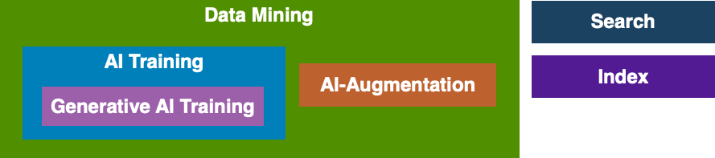

This ODRL Profile defines AI-specific actions which enables policy authors to clearly define acceptable and prohibited uses of assets in AI workflows. It supports governance, risk management, and compliance efforts, helping ensure that AI systems operate within agreed legal, ethical, and contractual boundaries.
This ODRL Profile defines a controlled vocabulary of actions governing the use of assets by Artificial Intelligence (AI) systems. As AI technologies increasingly interact with digital and physical assets—through training, inference, transformation, and decision-making—there is a need for precise, machine-readable policies that express permissions, prohibitions, and obligations specific to AI-driven activities.
This ODRL Profile addresses this gap by defining a set of actions tailored to AI systems. These include permissions and prohibitions related to training models, generating outputs, modifying assets, and redistributing AI-derived content. By enabling explicit and machine-readable policy statements, this profile supports responsible AI practices and facilitates enforcement of organisational, legal, and societal expectations.
The Profile URI for this vocabulary is defined as:
| ODRL Profile | AI Vocabulary | https://w3c.github.io/odrl/ai-vocab/ |
Within this document, the following namespace prefix bindings are used:
| Prefix | Namespace | Definition |
|---|---|---|
| odrl | http://www.w3.org/ns/odrl/2/ | [[!odrl-model]] [[!odrl-vocab]] |
This Profile uses wording according to [[!RFC2119]].
Numerous standards groups and other projects have developed vocabularies for "opt-out" of AI processes over user content. An analysis has found them to be divergent, fragmented, and imbalanced and also provides a detailed summary of these vocabulary options.
Below is a summary of the key proposals.
IEEE - AI Preferences [[?draft-ietf-aipref-vocab]]
Creator Assertions Working Group (CAWG) - Training and Data Mining Assertion [[?cwag-train]]
PLUS License Data Format - Data Mining [[?plus-data-mining]]
Really Simple Licensing (RSL) - AI Usage [[?rsl-ai]]
As can be clearly seen by these existing approaches, they are all inconsistent in semantics, and hence lack data interoperability for AI governance.
Using the current set of AI vocabularies described in Section 3 as a snapshot of the AI community requirements, the ODRL AI Vocabulary Profile includes the following semantic terms:
These vocabulary terms are shown below, including their hierarchy.

The next sections formally defines these vocabulary terms.
| Definition: | The act of using asset(s) in the context of any automated analytical technique aimed at analysing text and data in digital form in order to generate information which includes but is not limited to patterns, trends and correlations |
|---|---|
| Label: | data-mining |
| Identifier: | http://www.w3.org/ns/odrl/2/data-mining |
| Note: | |
| Included In: | use |
| Class: | Action |
| Mapping: |
This vocabulary term has similar semantics to:
|
| Definition: | The act of using asset(s) in the context of any training by AI algorithms and models |
|---|---|
| Label: | ai-training |
| Identifier: | http://www.w3.org/ns/odrl/2/ai-training |
| Note: | |
| Included In: | data mining |
| Class: | Action |
| Mapping: |
This vocabulary term has similar semantics to:
|
| Definition: | The act of using asset(s) in the context of any training by Generative AI algorithms and models |
|---|---|
| Label: | gen-ai |
| Identifier: | http://www.w3.org/ns/odrl/2/gen-ai |
| Note: | |
| Included In: | ai training |
| Class: | Action |
| Mapping: |
This vocabulary term has similar semantics to:
|
| Definition: | The act of using asset(s) in the context of input into trained AI algorithms and models |
|---|---|
| Label: | ai-augment |
| Identifier: | http://www.w3.org/ns/odrl/2/ai-augment |
| Note: | |
| Included In: | data mining |
| Class: | Action |
| Mapping: |
This vocabulary term has similar semantics to:
|
| Definition: | The act of enabling the asset(s) to be discoverable in a data store |
|---|---|
| Label: | Search |
| Identifier: | http://www.w3.org/ns/odrl/2/search |
| Note: | |
| Included In: | use |
| Class: | Action |
| Mapping: |
This vocabulary term has similar semantics to:
|
| Definition: | The act of enabling the asset(s) to be recorded in the index of a data store |
|---|---|
| Label: | Index |
| Identifier: | http://www.w3.org/ns/odrl/2/index |
| Note: | For example, to include a link to the Asset in a search engine database after the Asset has been processed by an algorithm. This term is the same as defined in the ODRL Common Vocabulary. |
| Included In: | use |
| Class: | Action |
| Mapping: |
This vocabulary term has similar semantics to:
|
The asset (dataset1) maybe used for AI Training only for the explicit purpose of "Research and Development" and must not be used for AI Augmentation.
{
"@context": "http://www.w3.org/ns/odrl.jsonld",
"@type": "odrl:Set",
"profile": "https://w3c.github.io/odrl/ai-vocab/",
"uid": "http://example.org/policy/001",
"target": "http://example.org/asset/dataset1",
"permission": [
{
"action": "odrl:ai-training",
"constraint": [
{
"leftOperand": "odrl:purpose",
"operator": "odrl:eq",
"rightOperand": "https://w3id.org/dpv#ResearchAndDevelopment"
}
]
}
],
"prohibition": [
{
"action": "odrl:ai-augment"
}
]
}